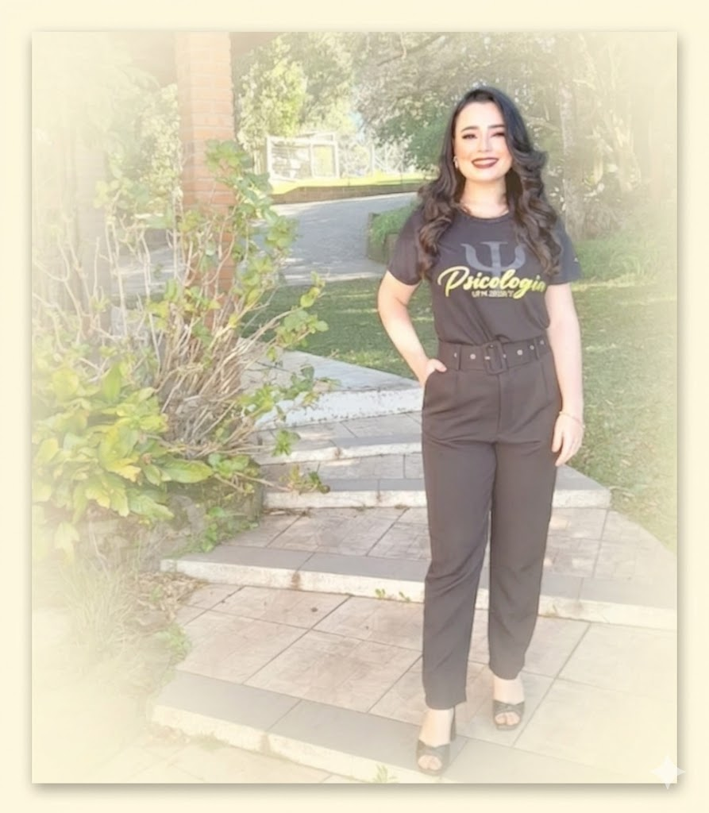

Está com dificuldades de lidar com o que está sentindo?
Como posso te ajudar:
Ofereço sessões de análise individual para adultos e adolescentes.
(a partir de 15 anos)
Meu trabalho é fundamentado no enfoque psicanalítico, proporcionando uma escuta ética à sua singularidade.
Os atendimentos são realizados de forma online, possibilitando flexibilidade geográfica e conforto para o seu processo terapêutico.
A análise
é um caminho para quem busca:
Dúvidas Frequentes
Como funcionam as sessões de forma online?
Os atendimentos são realizados via videochamada, garantindo conveniência sem abrir mão da proximidade. Cada sessão é respaldada por sigilo profissional...
Qual o tempo de duração de cada sessão?
Cada sessão terá a duração de até 50 minutos.
Qual o valor da sessão?
Para mais informações sobre os valores e formas de pagamento, entre em contato pelo WhatsApp.
Como iniciar o processo terapêutico:
Fale comigo
Este é o momento para você tirar dúvidas, entender como funcionam os atendimentos e agendar a sua primeira sessão.
A primeira sessão
Neste primeiro encontro, conversaremos sobre os motivos da sua busca pela terapia e alinharemos os detalhes do processo terapêutico.
Sobre mim
Minha prática clínica é fundamentada na ética da Psicanálise e em uma trajetória de especialização contínua. Sou pós-graduada em Psicologia Escolar, Psicologia e Desenvolvimento Infantil e Neuropsicologia com ênfase em Avaliações, além de estar concluindo minha formação em Avaliação Psicológica.
Em meus atendimentos, ofereço uma escuta acolhedora e sensível, pautada em compreender o sujeito em sua singularidade.